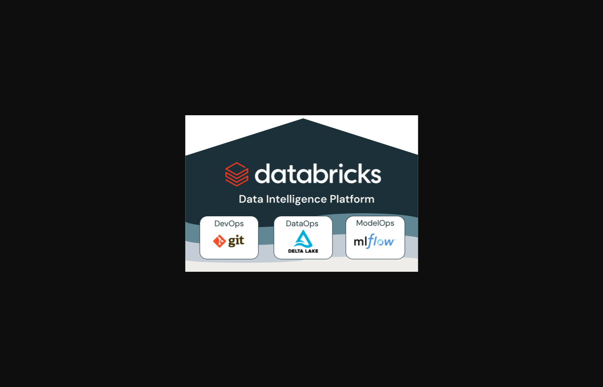
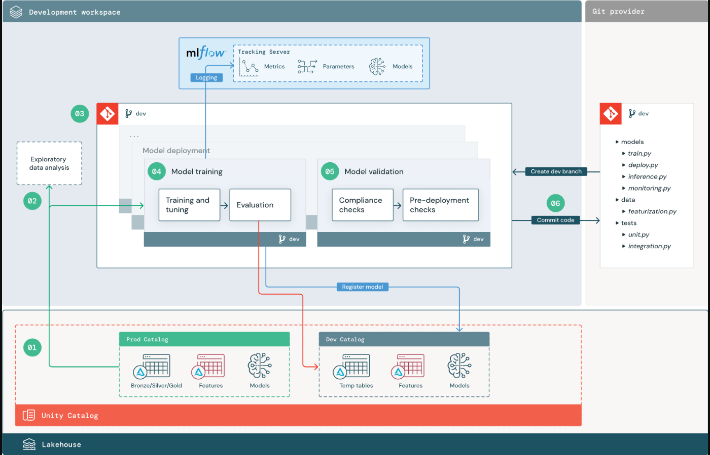
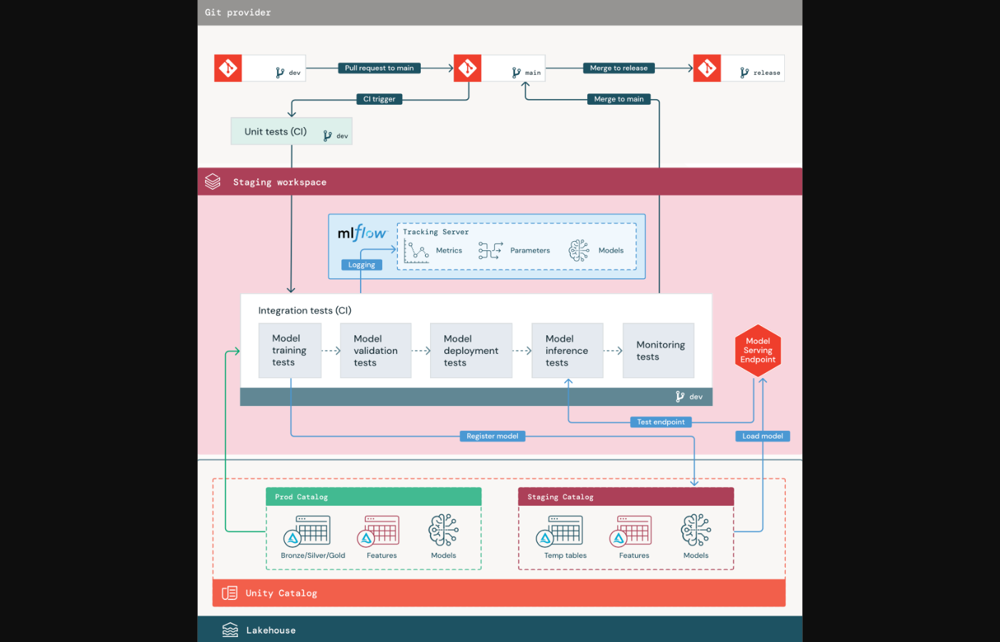
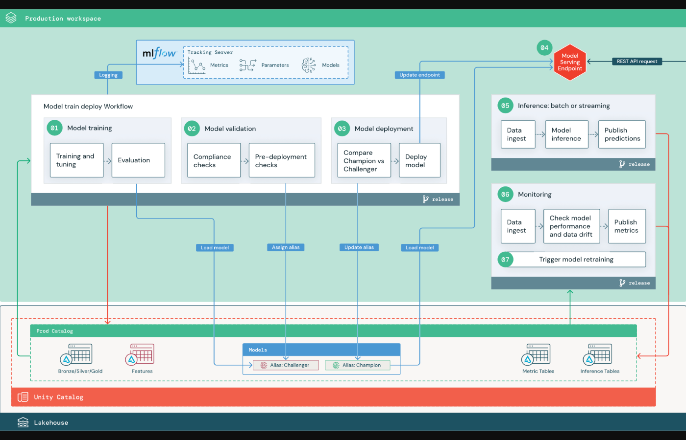

Everything we've built this semester — Kafka, Spark, Delta — is infrastructure. MLOps is what happens when you apply the same discipline to models that software engineering applied to code twenty years ago: version everything, test before promoting, make every decision traceable.
A data scientist trains a model in a notebook. It works. Six months later no one knows what data it was trained on, which experiment produced the artifact that went to production, or why it's behaving differently now. MLOps replaces that archaeology with a reproducible, versioned, observable pipeline.
Imagine losing access to version control overnight. Nobody agrees on which file is current, reverting a bad change is guesswork, and you have to re-run validation every time someone sends you a new notebook. That's where most ML teams are right now. MLOps is the version control layer ML has been missing.
Databricks frames MLOps around three environments — development, staging, production — each moving the same code and data through increasing levels of rigor before anything reaches users.

The dev stage is where data scientists work. The rule is simple: log every run. Parameters, metrics, artifacts — everything goes into MLflow so no experiment is ever lost. Multiple candidate models can be compared side by side in the UI without re-running anything.

This is what you're doing in today's lab: train two models, log both, compare in the Experiments UI. The best run gets promoted — not by opinion, by metric.
Before a model reaches production it runs through staging on a separate, representative dataset. This is where integration tests, bias checks, and human review happen. Nothing promotes automatically without passing the gate.

The model currently in production is the champion. Any new model is a challenger. The challenger only gets promoted if it definitively beats the champion on held-out data. The old model is never deleted — rollback is just redeploying the previous version.
Once promoted, the model is served — as a REST endpoint, batch job, or embedded call. Monitoring tracks whether performance degrades over time (data drift, concept drift). When it does, the cycle starts again: new training run, new comparison, new promotion.

The pipeline you run today covers dev and the handoff to staging (the Model Registry). The serving and monitoring layers are where a real production team would pick this up. Everything you've built this semester — Kafka events, Spark compute, Delta tables — feeds directly into that production stage. The infrastructure was never separate from the data science.
A recommendation model trained six months ago is now behaving differently. Without MLflow, what would you need to reconstruct the training run? With it, what can you recover in under five minutes?